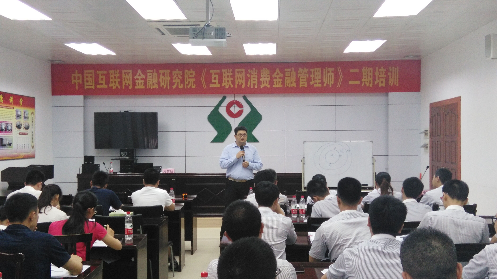
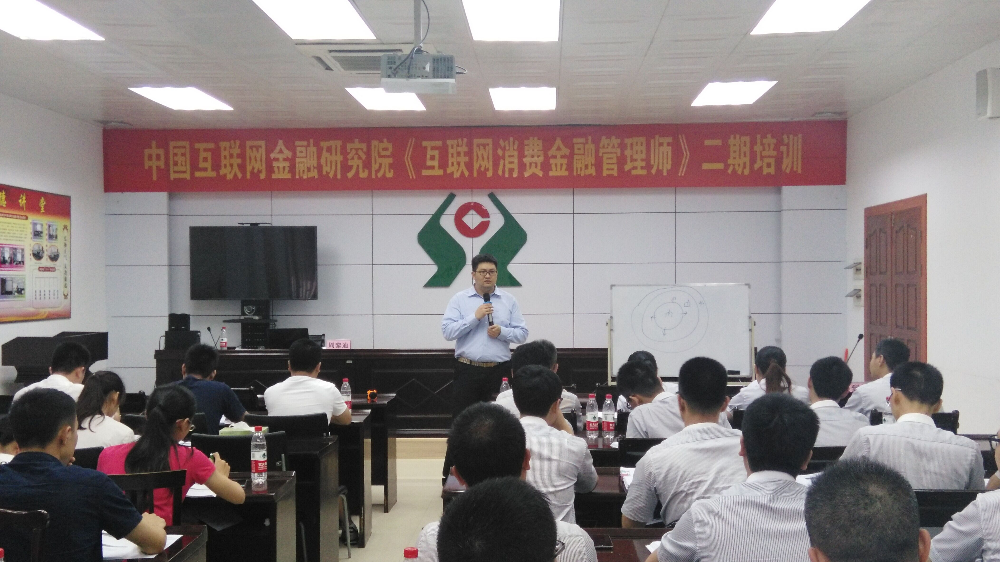

INTERNET
CONSUMER
FINANCE

PERSONAL
FINANCIAL
SERVICES

REMOTE
CREDIT
EVALUATION
INTERNET CONSUMER
F
inance

Research center was established

Introduction of consumer finance

Internet consumer finance manager

Consumer finance
business

Consumer Finance Manager Training

Consumer finance platform operators

Consumer banking software
Research center was established
S
et up
Introductionr
Consumer finance research center
China's Internet consumer finance financial institute research center is based on traditional financial companies such as bank competitiveness as the key point, to support the country's economic growth as the goal, to carry out research, consulting, integration of industry, training and development plan and related activity monitoring, a consultancy. Belonging to the Chinese Internet financial institute.Center Build
Consumer Finance Research
In January 2015, sponsored by the China electronic commerce association 2015 China Internet financial peak BBS and China Internet research institute held a grand opening ceremony in Beijing national convention center, China academy of Internet financial consumer finance research centre under the background of this arises at the historic moment.Gave nameboards research center
A
uthorization

To carry out vocational skills training
V
ocational skills training
With the rapid development of the financial industry, the Internet industry has grown in size and the entire industry to talented person's demand more and more intense, but the workers, the good and bad are intermingled, to some extent affected the market environment.
To comprehensively improve the whole quality of industry professionals, the standard industry market environment, promote the sustainable and healthy development of the industry should be the party central committee and the state council, China's Internet financial consumption center for financial research institute (hereinafter referred to as the "center") approval, set up to regulate the operation of the consumer finance business standards for the purpose, to help Banks into consumer finance blue ocean industry, cultivating talents, consumer finance should be the party central committee and the state council called on, center set up and carry out "the Internet consumer financial management division" occupational skills training certification program.


Introduction
O
f consumer finance
Consumer Finance
What is a consumer finance
Consumer finance refers to a consumer financial company to the borrower for consumption (not including buying homes and cars) for the purpose of the loan. With a single line of credit of small, fast examination and approval, no collateral, flexible services, the advantages of the loan term is short.Consumer finance
C
onsumer finance background
At present, China's consumer loan balance of total loan balance is only about 20%, and 50% is still a big gap than European and American developed country, from the point of the loan subsidiary, in 13 years to 14 years in the bank's personal loan, credit proportion also after the mortgage and car loans, ranked third.
China's Internet consumer finance market starting stage at present, with the overall development of the financial industry, the Internet, the concept of residents escalated, and further recognition of consumer financial model on the Internet, the Internet consumer finance market in the next three years, will continue to keep the explosive growth. Internet consumer finance market in 2014 deals reached 9.69 billion yuan, rose 112.5%, the market size by 2017 is expected to exceed 2017 yuan.
Internet consumer finance companies development in China has experienced three phases:
1, the first phase of the pilot period 2010-2013
North silver consumer finance companies, China consumer finance companies, consumer finance companies and chengdu home credit consumer finance companies. In Beijing, Shanghai, chengdu, tianjin pilot
2, the second phase expansion in 2013-2015
New pilot cities include: shenyang, nanjing, hangzhou, hefei, quanzhou, wuhan, guangzhou, chongqing, xian and Qingdao
3, the third stage fully open period since 2015
On the one hand, the extension of the pilot cities across the country, on the other hand below the approval rights to each department at the provincial level
Located in the Qingdao haier consumer finance companies, located in wuhan in hubei province consumer finance company, located in nanjing suning consumer finance companies, consumer finance companies immediately in chongqing municipality, is located in guangzhou of post consumer finance company, hangzhou HangYin consumer finance companies, hefei emblem silver consumer finance companies, shanxi jin merchants consumer finance companies, liaoning shengyin consumer finance companies, etc., the financial industry, the establishment of the consumer finance companies make system more robust, plays a positive role to the development of consumer finance.


Consumer finance
E
ffect

For financial institutions
1, optimize the assets structure; 2, promote the profit growth; 3, improve the financial service system.
Effect on consumers'
1, meet the demand of normal consumption; 2, promoting consumption upgrading; 3, strengthen the consciousness of personal credit.
Effect on the economic transformation
1, to expand domestic demand, consumption; 2, transformation of the pattern of economic development; 3, optimize the environment of social credit.
In carrying out national "expanding domestic demand and promote economic structure transformation and upgrading", consumer finance will become the economic transformation and pratt &whitney financial booster, for stimulating economic development and structural transformation is of great significance.
Consumer finance in the raise the level of the consumer life and support economic growth plays a positive role in promoting, the financial services currently in mature markets and emerging markets have been widely used.
The current domestic consumer finance
M
arket

College consumer market by installments

Blue-collar consumer market by installments

Housing consumption market by installments

Travel consumer market by installments

Decorate a consumer market by installments

Education consumption market by installments
Internet consumer finance manager
C
ourse

A, curriculum background
2016 Internet financial talent attraction index rising, talent attraction at the top of the list, many industries are all talented person net, the relevant statistics show that in the next few years China's Internet financial talent gap will be more than 300, while consumer finance personnel belongs to the gap in the gap, the next ten years, domestic consumption financial talent gap will continue to rise.
On March 16, 2016, China's Internet financial institute approved to establish "Chinese Internet financial consumption center for financial research institute (hereinafter referred to as the" center "), to regulate the operation of the consumer finance business standards for the purpose, to help Banks into consumer finance blue ocean industry, cultivating talents, consumer finance should be the party central committee and the state council called on, center set up and carry out "the Internet consumer financial management division" occupational skills training certification program.

B, the agency was established
In January 2015, sponsored by the China electronic commerce association 2015 China Internet financial peak BBS and China Internet research institute held a grand opening ceremony in Beijing national convention center, China academy of Internet financial consumer finance research centre under the background of this arises at the historic moment. China academy of Internet financial consumer finance research center to finance honest, prudent, stable, profitable business nature, to promote Chinese residents can benefit from pratt &whitney financial and develop corresponding talents to make due contributions.
On March 16, 2016, China's Internet financial institute approval consumer finance research center was established.

C, institutional profile
China's Internet consumer finance financial institute research center is based on traditional financial companies such as bank competitiveness as the key point, to support the country's economic growth as the goal, to carry out research, consulting, integration of industry, training and development plan and related activity monitoring, a consultancy. Under the Internet into the institute.
D, course description
The Internet consumer financial management division series course divided into advanced class and middle class, according to the school, teaching channels and into different training products, at the same time, the center to open an online training course.
Advanced course content includes: overview of consumer finance, and marketing of consumer finance, the consumer finance business and operations, "financial risk control consumption and fraud", "consumer financial information technology", "consumer finance and laws and regulations construction, etc.;
Intermediate class course content includes: the consumer finance base ", "consumer finance marketing", "financial risk control consumption", "financial compliance" consumption, etc.

E, the syllabus (advanced)
(a) foundation course
1. Consumer financial infrastructure; 2. The development history of consumer finance; 3. The domestic consumer finance management entity is introduced; 4. Consumer finance business model; 5. Introduce several typical consumer financial entities
(b) business courses
1. The meaning of commercial Banks to carry out the consumer finance; 2. Consumer finance business model choice; 3. The consumer finance business/company's organizational structure; 4. The consumer finance business/company department role; 5. Consumer finance credit factory pattern is introduced. 6. Consumer finance marketing system. 7. Consumption configuration and innovation of financial products; 8. Consumer financial accounting system; 9. Consumer finance assets management and collection; 10. Consumer finance organization staff training, evaluation
(c) risk control courses
1. The consumer finance business risk control concept, with the company's business, the differences between the small business risk control? ; 2. The consumption culture in the whole process of financial risk control of credit factory implementation; 3. The risk control department personnel allocation and division of labor; 4. Risk control department at the core of the process (online, offline); 5. The choice of risk control model and optimization; 6. The performance evaluation of the risk control department; 7. Consumer financial asset preservation and collection
(d) technical courses
1. The mainstream of the Internet financial technology introduction; 2. Consumer demand for computer technology (a) consumer finance companies technology architecture, application architecture, data architecture, infrastructure, security architecture); b) consumer finance governance of science and technology (science and technology, organizational structure and division of labor, technical team building and training) ]; 3. Consumer finance system and its main application is introduced; (c) channel access class: APP, third-party API; d) background processing categories: letter review system, risk control system; e) data analysis classes: big data platform, model maintenance; f) infrastructure]; 4. Several typical consumer finance share the technical architecture
(e) law courses
1. The evolution of the development of the Internet financial and regulatory environment at home and abroad. 2. The development history of domestic consumption financial regulations (2007-2013-1015); 3. Consumer finance related regulations (such as third-party payment, electronic account regulations) is introduced. 4. The future domestic consumption analysis of the evolution of financial supervision and regulation; 5. Commercial Banks how to make full use of the regulations of the dividend, rapidly expand consumer finance

F, syllabus (intermediate)
(a) base paper
1. Summary of consumer finance, consumer finance definition, development history and the direction of domestic consumption; 2. Consumer finance to participate in the organization, organization structure and roles; 3. The amount of financial business model (online, offline and online mode). 4. The consumer finance business process (marketing - approval - lending - collection, teaching process to do); 5. Consumer financial products (consumer financial products, plan breath way, reimbursement of setting up the related calculation, etc.); 6. Consumer finance risk control and fraud (consumer finance business how to do risk control, fraud). 7. Consumer finance assets management and collection; 8. Customer manager in the position and role of the consumer finance business
(b) marketing article
1. The significance and the value of the marketing of consumer finance, the characteristics of consumer marketing; 2. Consumer finance marketing manager for the customer requirements; 3. Marketing foundation; 4. Consumer behavior and consumer psychology; 5. Customer groups consumption financial analysis and marketing strategy; 6. Real fuck on consumer finance marketing skills and training; 7. Etiquette, dress and speech; 8. Persuade skills; 9. Product recommendations and solutions; 10. In field training
(c) the risk control
1. The risk control and the significance and the value of the financial fraud on consumption, consumer finance risk control and the characteristics of the fraud; 2. Consumer financial risk control and anti-fraud marketing manager for the customer requirements; According to the characteristics of consumer finance risk control pertaining to the customer manager in the marketing, research ability, knowledge requirements; 3. The financial risk management; 4. Consumer finance risk control and the fraud in the whole process of the ground; In a guest, the examination and approval, the collection of assets in the link of related processing is introduced; 5. Consumer financial risk control and anti-fraud explaining skill in field and training
(d) the compliance report
1. Domestic consumption financial regulation development history; 2. Domestic consumption financial regulation law is introduced; 3. Consumer finance related regulations is introduced; 4. Customer manager how to compliance work

G,Course advantage
Strong practicability, dry goods
Different from traditional financial business training, this training course in addition to consumer finance theory teaching, will focus on consumer finance field and experience of training teachers from many domestic first-class commercial Banks, consumer finance companies, has the rich work experience, in addition to imparting consumer finance idea, more teaching core consumer finance related links such as business development, risk control fraud, information technology and so on specific field experience, students can rapid growth in a short period of time for practical backbone in the field of consumer finance, in the fierce talent market.
Brand effect and value enhancement
As dry cultivation of domestic financial services market for many years, finance and national ministry of industry and consumer finance research institute jointly launched consumer finance courses, qualified trainees will be authenticated by the national ministry of industry and related ability certificate, this is very good value for the broad masses of students improve marks and ability to prove it.

H, teachers' instructions
Training the teachers are from the lecturer, experts in the field of related academic field and practice field, lawyers and risk control, senior analyst, teacher, on behalf of the professional level of the Internet financial training, is a good way to guarantee the training of students can not only learn solid theory knowledge, and to have the strong ability to solve practical problems, ensure that students can do the Internet consumer finance job requirements.

I, certificate
"Consumer financial management division," refers to the commercial Banks, consumer finance companies, financial companies, financial institutions, such as Internet in the consumer finance industry business, risk control and management professionals.
The Internet consumer financial management division certificate is the holder to perform the financial industry, the Internet consumer finance business skills. The certificate for the Chinese Internet financial professionals, the traditional finance professionals and people who are aspiring to enter the industry society.
The Internet consumer financial management division certificate by the China Internet financial institute consists of consumer finance research center of the inspection certification, China's Internet financial institute certificate, issued by the ministry of industry and cover chapter of industry and information technology, information center. Passed the training and assessment certification, holder can be competent for marketing, consumer finance related work background operation, risk control, loan approval, such as product manager position.
Consumer finance business
B
usiness field
ONE. Consumer finance business
1. AdvisoryConsumer-oriented financial institutions to provide financial advisory services for the theme of the series...
2. OperationsKang Jin dry clothes ready to work with financial institutions to set up consumer finance organizations to conduct business operations...
3. TrainConsumer-oriented financial institutions to provide training practitioners, covering consumer finance professionals, including account managers...
4. ImplementConsumer-oriented financial institutions to provide financial application system implementation, Kim Kang dry clothes mature system products...
TEO.Consumer Financial Services
Dry clothes Kim Kang-depth cooperation with the Ministry of Finance Research Institute of the Chinese Internet, the consumer finance Plough, is currently working to offer consumer finance professional training courses.


TREE. Examples consumer finance acquisition channels
1. Beijing Huaxin Electronics Enterprise
2. Roca Shopping


FOUR.Customer diversion channel
1. Online Store 2. Entity District 3. WeChat district
FIVE.Consumer finance system
1. The whole process of risk control
Customer Information Management (into pieces)------Integrated Risk Management------Credit platform------Channel Platform Management (open up consumer finance ecosystem)
2. Credit platform
Advantage:
A full range of data: Account Manager site survey of credit data, big data mining
Superb data: cross-checking the accuracy of the data, specific data mining algorithm logic,
relevance psychology, behavioral psychology import
Timeliness: Online credit assessment developed in accordance with the level of risk
assessment strategies
Accuracy: real-time updates economic situation index model customization regionalization
credit expert online guide

3. Big Data-Primary data collection and preprocessing
Original data: fund, water, electricity, newspapers, blog microblogging, communication and information, the Internet+
Pretreatment: data deduplication---Noise data---Smart Word
Consumer Finance Manager
T
raining
First, the consumer finance division management training Shanghai Jingxian "professionals" Training industry to fill the gap
In recent years, the financial industry, the rapid rise of the Internet, on the one hand, the parties to attract strong capital settled. According to relevant data show that as of the end of March 2016, mutual gold industry attracted a total of about 139.8 billion yuan of venture capital; on the other hand, gold mutual talent "emergency", according to another set of data shows that in the next few years China Internet banking talent gap will reach 300 million, of which consumer finance talent gap is particularly prominent.
In order to regulate the operation of standard consumer finance business, culture consumer finance professionals, March 16, 2016, China Internet Institute of Finance approved dry clothes Kang Jin (Beijing) Information Technology Co., Ltd. set up a "China Internet Research Center, Institute of Finance, the consumer finance (hereinafter referred to as "the Centre"), the center set up and carry out the "Internet consumer finance management division" vocational skills training.
Deadline, "Internet consumer finance management division" Vocational training has been successfully held two, nearly 60 participants attended the training, 95 percent of the students successfully passed the certification exam, obtain "Internet consumer finance management division" certificates. According to reports, the third phase of the "Internet consumer finance management division" vocational skills training will be located in Shanghai, the relevant channel registration is now open.
 

Second, through the rate was 95 percent effective training to fill the talent gap cross gold
June 1, 2016, the "Internet consumer finance management division" vocational skills training conducted in Guilin, from financial institutions, consumer finance companies, small loan companies and other industries of the 45 trainees full of enthusiasm to participate overwhelmed vocational training.
In the "Internet consumer finance management division" vocational skills training in five days, lecturer Deep vivid interest for all participants decrypt the consumer finance basics under the type of business, to control risk, the core technology, legal risks and other issues. Such as those for consumer finance technical papers in the course of Tian quoted on the "Ode to Joy," "Captain America 3", "carriage and the industrial age", "Beijing traffic jam," "gap emperor life and life science and technology" and other cases vividly guide students to understand the meaning of art and existence.
A bank Electronic Banking Division to participate in the training with respect, had also participated in many training, the overall feeling is no concrete results were partial theories, and "Internet consumer finance division management" course is different, really benefit.
"First of all for the future of consumer credit sector (consumer finance) business this fall of a great inspiration, explore ideas; secondly Course content is very innovative, teacher-depth explanation opens up this area of our consumer finance new understanding. "he further adds.
It is reported that the "Internet consumer finance management division" Vocational training is the second phase, after the center in Beijing has successfully landed the first phase of training. According to incomplete statistics, a total of two training successful delivery of nearly 60 "professionals" as consumer finance, student licensing success rate of 95%. For the members of the evaluation is not successful through the center of the relevant responsible person said, it will give a free make-up opportunity.
Third, consumer finance, "professionals" to continue training or third floor in Shanghai
Indeed, the market dazzling variety of training, how to stand out, to realize the value of training, transportation professionals in the financial industry for the Internet, especially consumer finance, it is worth pondering.
In this regard, the center responsible person said that apart from teachers, broad platform, foresight and vision, etc., on the practicality, the course will focus on consumer finance and experience in the real parade, through personal experience in training teachers to teach consumer finance related core technologies, such as business development, risk control fraud, information technology and other specific practical operation experience, students can grow rapidly in a short time, come to the fore in the talent market.
"Second, Kim Kang dry clothes and the State Ministry of Consumer Finance Research Institute jointly launched consumer finance courses, students will pass the examination by the State Ministry of Industry and vocational skills certificate issued."


Fourth, the third prize goes to where?
Vocational training such a high gold content, where a third of the flowers? In this regard, the relevant person in charge of the training activities revealed that in order to meet market demand more, following the first phase of Beijing, Guilin two "Internet consumer finance management division," the third of the vocational training in Shanghai, then, from academia, practitioners in related fields lecturers, experts, lawyers and senior analyst will focus on risk control Internet based consumer finance business, risk control, and other technical and legal knowledge purse.
As for participating in the training, "threshold", the relevant person in charge of further disclosed that said:. "As long as college and higher education, interested in engaging in consumer finance working group are invited to participate in the training." It is understood that settled in Shanghai, the third phase of registration channels now open, willing to participate in training who can register by phone. In addition, to improve the ease of registration, registration number of micro-channel public channels are being launched in.
Personal financial services
C
onsulting operations

A, small loans business consulting
Tiny loans dried kang company consulting operations is based on IPC micro loan application technology, summarizes several Banks small micro lending operations of advanced experience, on this basis, through in-depth study and summary, form a unique local characteristics, covers the customer identification, risk control, the whole process management system of dry Kang Xiaowei loan business.
Dry, innovation of the customer manager layered management system, customer network maintenance mode, assessment method and effective performance evaluation, responsibility, clear rewards and punishments accurate the responsibility of the management system.

B, the credit card business consulting
CardPay finance a full range of credit card business consulting, operations. Credit card business development strategy consulting; credit card center management architecture, business systems consulting; business credit card product innovation and design consulting; credit card business integrated risk management policy advice, and improve risk prevention and control system; credit card center management and marketing capacity building; credit card operations, further implementation of the outcome of consultation on a consultancy basis, revenue sharing with the bank.
C, the personal financial business management and marketing Ability
CardPay improve financial services core competitiveness and sustainable development capacity, and to ensure the smooth conduct comprehensive personal financial business, develop a business with independent, effective risk control, in-depth development of the market, high-quality performance well done core team.


Remote credit evaluation
P
latform
"Financial Credit Platform"
"CardPay Financial Credit Platform" credit provided to the expert online conduct credit assessments remote credit platform to effectively integrate credit expert resources, precise prevention and control of credit risk. In accordance with the special credit risk characteristics matching expert, flexible credit assessment and approval of the audit mode, the ability to achieve business and management.Credit Evaluation Model
CardPay Finance "credit assessment model" based on personal financial business credit credit policy in order to assess the repayment ability of multi-dimensional, business conditions, the owner (operator) moral character, the owner (operator) of the body and other living conditions the starting point, the line and the first data combined with unique algorithm modeling...
 中文
中文 ENGLISH
ENGLISH
Shanghai ICP for 13043724